Number of data points: 143
Coordinates summary
east north
min 150.1220 70.3600
max 768.5087 461.9681
Distance summary
min max
1.0000 619.4925
Borders summary
east north
min 137.9873 46.7695
max 798.6256 507.9295
Data summary
Min. 1st Qu. Median Mean 3rd Qu. Max.
162.7700 234.1900 269.9200 274.4106 318.2300 413.7000
Other elements in the geodata object
[1] "loci.paper"Predirre la caduta della pioggia in Brasile
Indice
Introduzione
Con il seguente lavoro si intende analizzare, esplorare e valutare i benefici di una approccio geospaziale su un dataset presente nel pacchetto geoR chiamato parana. Questo dataset è stato utilizzato per la prima volta in un lavoro di ricerca, i dati sono le medie delle precipitazioni in una regione del Brasile chiamata appunto Paranà collezionati nel periodo che va da Maggio a Giugno per diversi anni. L’obiettivo è di tipo predittivo, avere una stima corretta del livello di precipitazione che si dovrà affrontare in un determinato periodo è un’informazione fondamentale per Paesi come il Brasile. Si ipotizza che il classico stimatore OLS non sia il migliore tra gli stimatori lineari possibili in quanto tale fenomeno fisico è fortemente caratterizzato dalla sua locazione nello spazio. La correlazione degli errori nello spazio farà ipotizzare una modellizzazione della variabile aleatoria che dipende dalla posizione nella regione e dalla realizzazione della stessa nelle altre regioni. Si ricorre, perciò, ad un predittore molto comune nella geostatistica chiamato Kriging, ipotizzando entrambi gli approcci (Ordinario e Universale).
E’ importante tenere in considerazione che i dati sono geospaziali, quindi nella modellizzazione del processo le posizioni dei punti non sono considerate stocastiche e la variabile dipendente presenta un dominio continuo ed è quindi possibile osservarla, almeno in teoria, in qualunque altro punto.
Esplorazione e visualizzazione del dataset
Nello specifico il dataset presenta 143 osservazioni e tre variabili:
- La longitudine (East)
- La latitudine (Nord)
- La media del livello di precipitazioni nel periodo per quella zona
Si osserva la distribuzione della nostra \(Z\), la correlazione con e tra le altre variabili e i valori nella regione con i seguenti grafici:
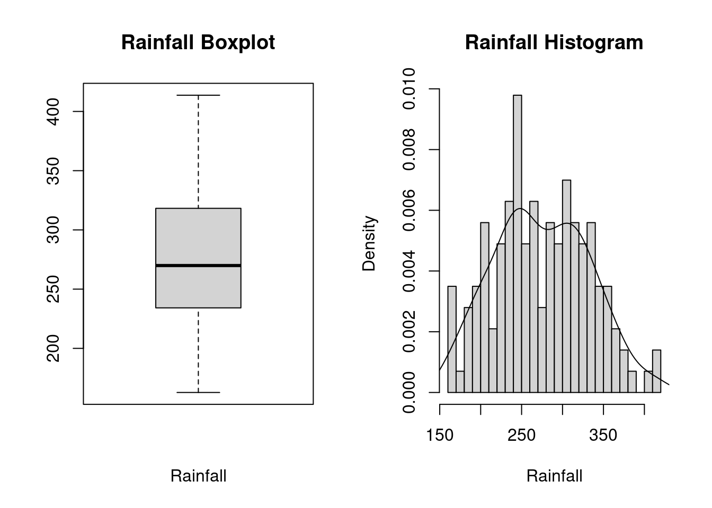
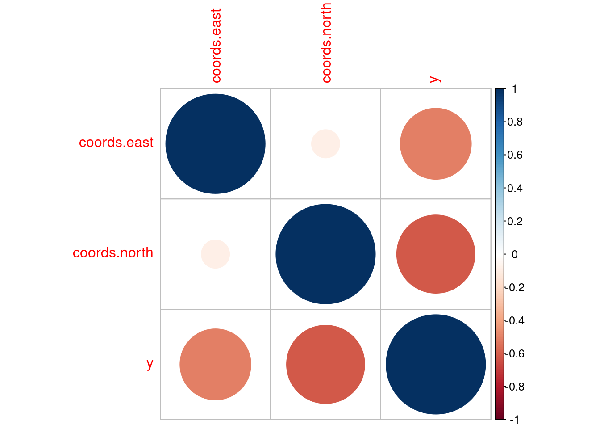
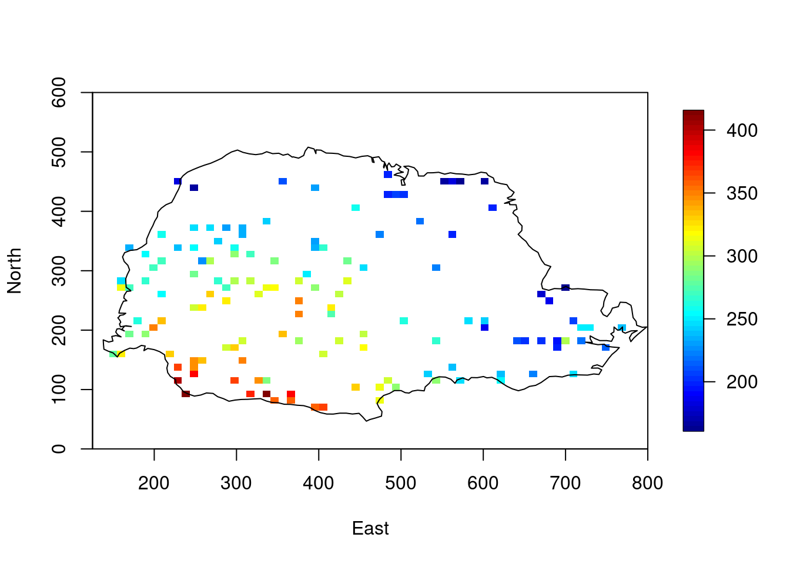
Si nota una distribuzione abbastanza simmetrica, una correlazione negativa con le altre variabili indipendenti che conferma anche con il plot relativo alla cartina un andamento positivo del fenomeno proseguendo nella direzione Sud-Ovest della regione.
Relazione confermata nel seguente Data Posting (in alto a sinistra) e dallo scatterplot 3D:
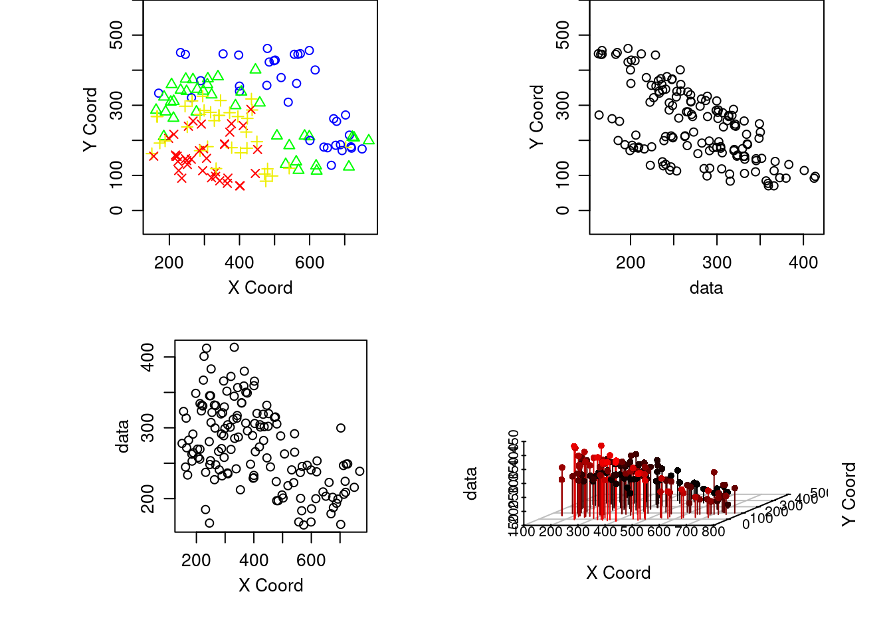
Uno strumento fondamentale da utilizzare per effettuare un’analisi esplorativa spaziale è il variogramma, con il quale si analizza l’andamento della varianza delle osservazioni del fenomeno a seconda della loro distanza.
Anche qui vediamo un chiaro trend nei dati, ciò porta ad ipotizzare una varianza che dipende dalla posizione dell’osservazione.
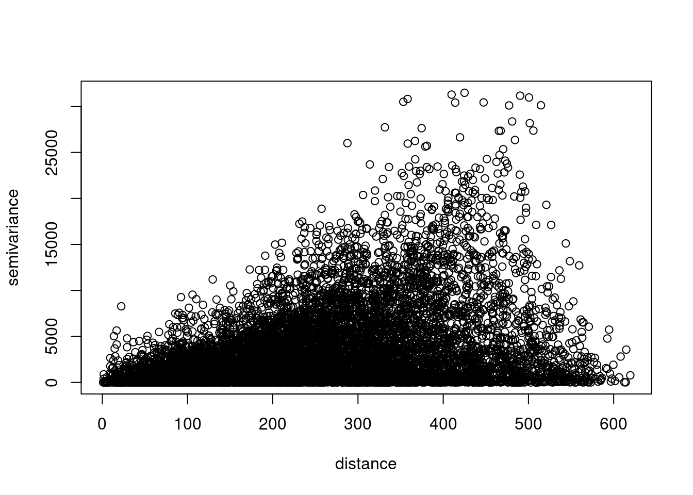
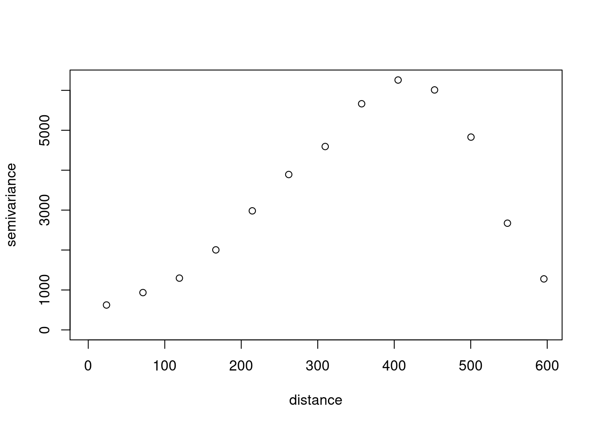
Le ultime conferme grafiche per procedere con una modellizzazione geospaziale del fenomeno ce le danno il Perspective plot che si basa su una interpolazione dei dati nelle regioni in cui non ci sono osservazioni, ed anche un versione “isolata” dello scatterplot 3D già vista prima ma riportata in questa sede per chiarezza.
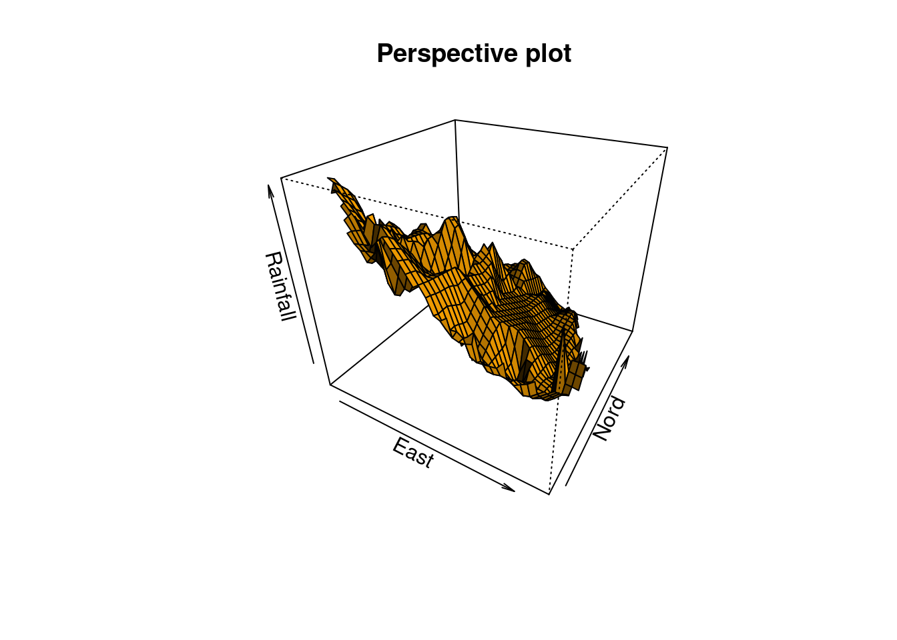
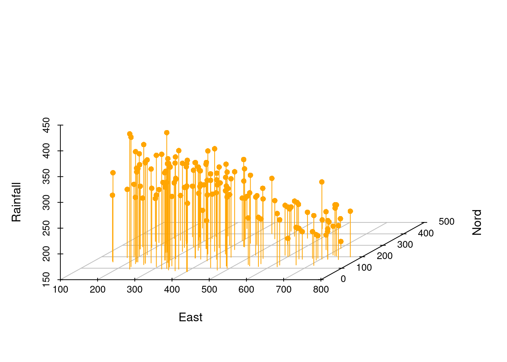
Kriging
Il kriging è una tecnica di stima utilizzata nella geostatistica per predire i valori di variabili geospaziali non osservate in punti non campionati, basandosi sulle informazioni fornite dai punti campionati circostanti. Esistono due principali tipi di kriging: kriging universale e kriging ordinario. Entrambi condividono l’ipotesi di base di avere a che fare con processi stocastici intrinsecamente stazionari (valore atteso nullo e varianza che dipende esclusivamente dalla distanza dei siti) ma differiscono nella complessità del modello utilizzato per stimare il trend di larga scala deterministico. Formalmente la stima nel sito \(s_0\) data da \(Z^*(s_0)\) è una combinazione lineare delle osservazioni nelle altre zone: \[Z^*(s_0) = \lambda^TZ(s)\] Le evidenze empiriche ci spingono ad adottare il Kriging come stimatore che si dimostra essere BLUP (Best Linear Unbiased Predictor) in casi come il nostro in cui la struttura della matrice di covarianze dei dati è complessa.
Kriging Ordinario
Il Kriging Ordinario ipotizza un modello del tipo: \[Z(s) = \mu + \delta(s)\] Quindi una intercetta costante \(\mu\) da stimare tramite una procedura iterativa che inizialmente utilizza OLS e poi corregge lo stimatore con una stima GLS in cui la correzione viene fatta tramite la matrice di covarianza che deriva dalla precedente iterzione, questo viene ripetuto finchè gli stimatori \(\hat\beta\) non differiscono di troppo tra una iterazione e la successiva. Nel caso del Kriging Ordinario lo stimatore è unico.
Una componente stocastica \(\delta(s)\) con errori correlati che rappresenta il trend di piccola e micro scala insieme ad un errore di misura.
Dovranno essere stimati allora \(\mu\), \(\sigma^2\) e \(\phi\) il primo per il trend di larga scala costante su tutto il dominio e gli ulitmi due appartengono alla struttutra di covarianza che deve essere utilizzata per stimare le covarianze tra tutti i siti. Vi sono diversi modelli teorici per le stutture di covarianze, questi ci rendono agevole stimare le coppie di covarianze che altrimenti sarebbero troppo numerose rispetto ai dati in possesso, inoltre garantiscono la positività di tale matrice. Si procede allora alla stima del modello di larga scala (costante) che presenta un’intercetta molto significativa.
Il variogramma sui residui mostra un trend quindi il prossimo passo sarà scegliere un modello di covarianza teorico ed interpolarlo con il variogramma empirico sui residui tramite OLS/WLS o Maximum Likelihood per trovare le migliori stime di \(\sigma^2\) e \(\phi\).
Call:
lm(formula = d$y ~ 1)
Residuals:
Min 1Q Median 3Q Max
-111.641 -40.221 -4.491 43.819 139.289
Coefficients:
Estimate Std. Error t value Pr(>|t|)
(Intercept) 274.411 4.798 57.19 <2e-16 ***
---
Signif. codes: 0 '***' 0.001 '**' 0.01 '*' 0.05 '.' 0.1 ' ' 1
Residual standard error: 57.38 on 142 degrees of freedomvariog: computing omnidirectional variogramSi sceglie di utilizzare un variogramma sferico essendo spesso utilizzato e soprattutto di facile interpretazione.
Si sceglie, inoltre, di effettuare la prima stima dei parametri del variogramma con i minimi quadrati ordinari:
variofit: covariance model used is spherical
variofit: weights used: npairs
variofit: minimisation function used: optim Warning in variofit(vario_res_ok, cov.model = "sph"): initial values not
provided - running the default searchvariofit: searching for best initial value ... selected values:
sigmasq phi tausq kappa
initial.value "4693.86" "476.53" "0" "0.5"
status "est" "est" "est" "fix"
loss value: 6635717862.43715 $pmethod
[1] "WLS (weighted least squares)"
$cov.model
[1] "spherical"
$spatial.component
sigmasq phi
5502.7899 507.0711
$spatial.component.extra
kappa
0.5
$nugget.component
tausq
0
$fix.nugget
[1] FALSE
$fix.kappa
[1] TRUE
$practicalRange
[1] 507.0711
$sum.of.squares
value
4697685432
$estimated.pars
tausq sigmasq phi
0.0000 5502.7899 507.0711
$weights
[1] "npairs"
$call
variofit(vario = vario_res_ok, cov.model = "sph")
attr(,"class")
[1] "summary.variomodel"Che porta ad una interpolazione del variogramma empirico più che accettabile.
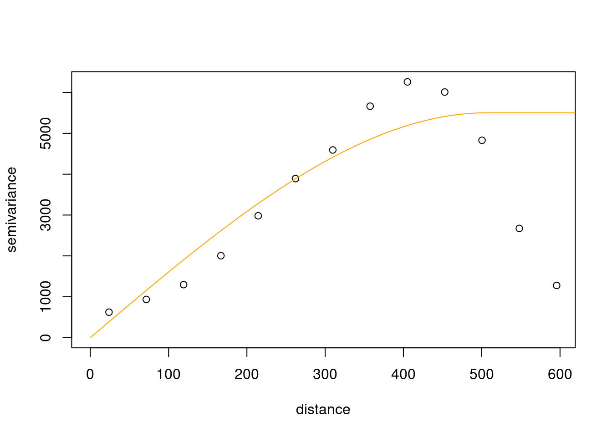
Per completezza si stimano i parametri suddetti anche con il metodo della Massima Verosimiglianza per vedere se i risultati sono simili.
Summary of the parameter estimation
-----------------------------------
Estimation method: maximum likelihood
Parameters of the mean component (trend):
beta
-29.6888
Parameters of the spatial component:
correlation function: spherical
(estimated) variance parameter sigmasq (partial sill) = 3429
(estimated) cor. fct. parameter phi (range parameter) = 917
anisotropy parameters:
(fixed) anisotropy angle = 0 ( 0 degrees )
(fixed) anisotropy ratio = 1
Parameter of the error component:
(estimated) nugget = 361.3
Transformation parameter:
(fixed) Box-Cox parameter = 1 (no transformation)
Practical Range with cor=0.05 for asymptotic range: 917.018
Maximised Likelihood:
log.L n.params AIC BIC
"-670.7" "4" "1349" "1361"
non spatial model:
log.L n.params AIC BIC
"-781.5" "2" "1567" "1573"
Call:
likfit(geodata = WWres_ok, trend = "cte", ini.cov.pars = c(p_sill_ok,
range_ok), fix.nugget = FALSE, nugget = 500, cov.model = cov_model_ok)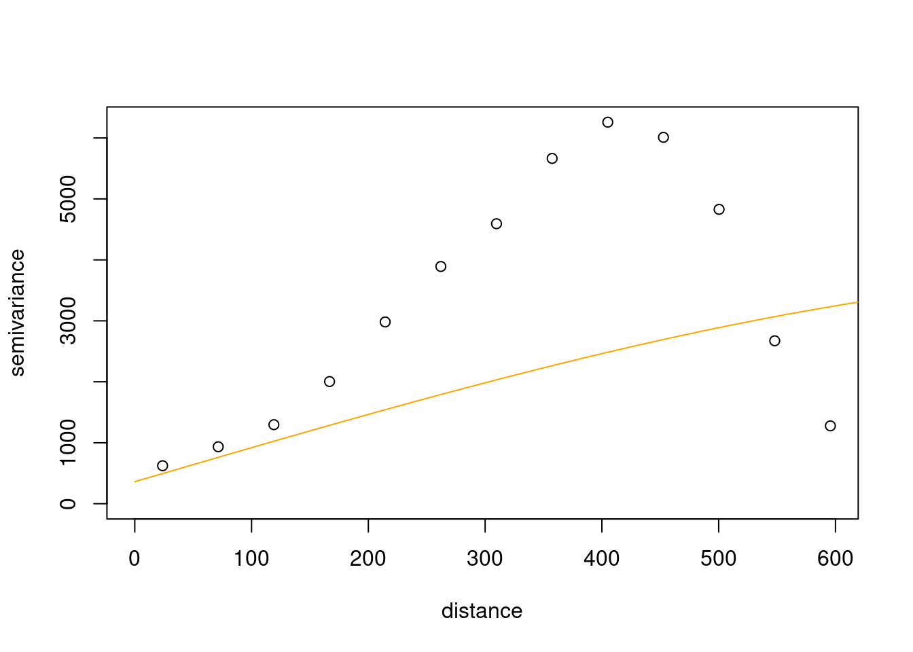
I risultati delle due stime sembrano differire, di conseguenza si sceglie quello che sembra interpolare meglio il variogramma sui residui, il primo.
Si riportano di seguito i risultati per la previsione e successivamente gli standard error associati a tali previsioni tramite dei Perspective Plots.
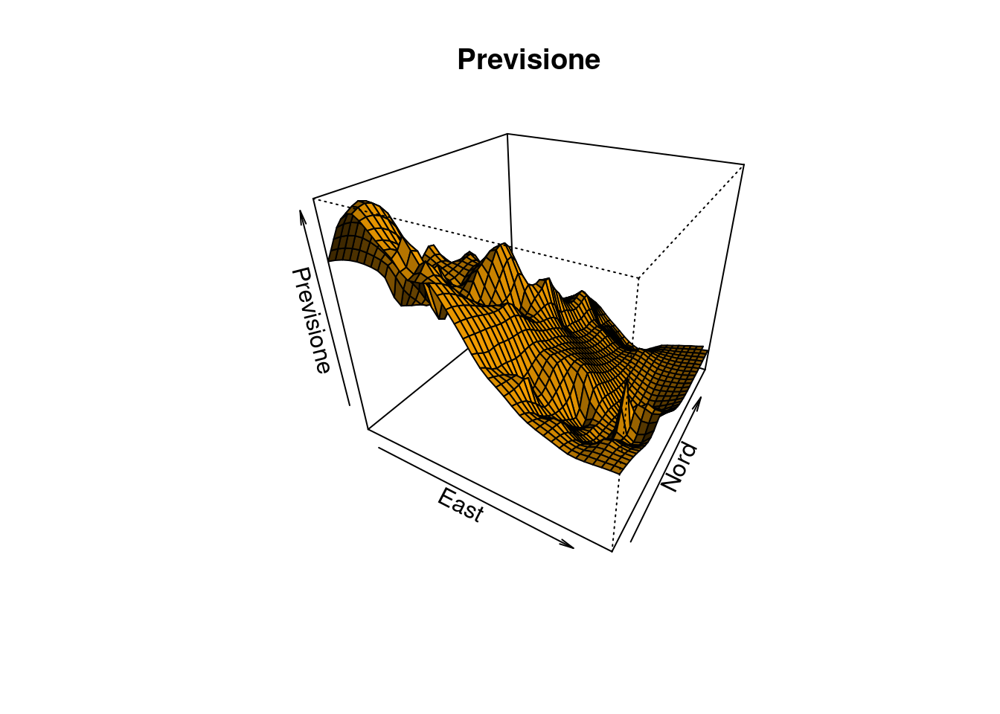
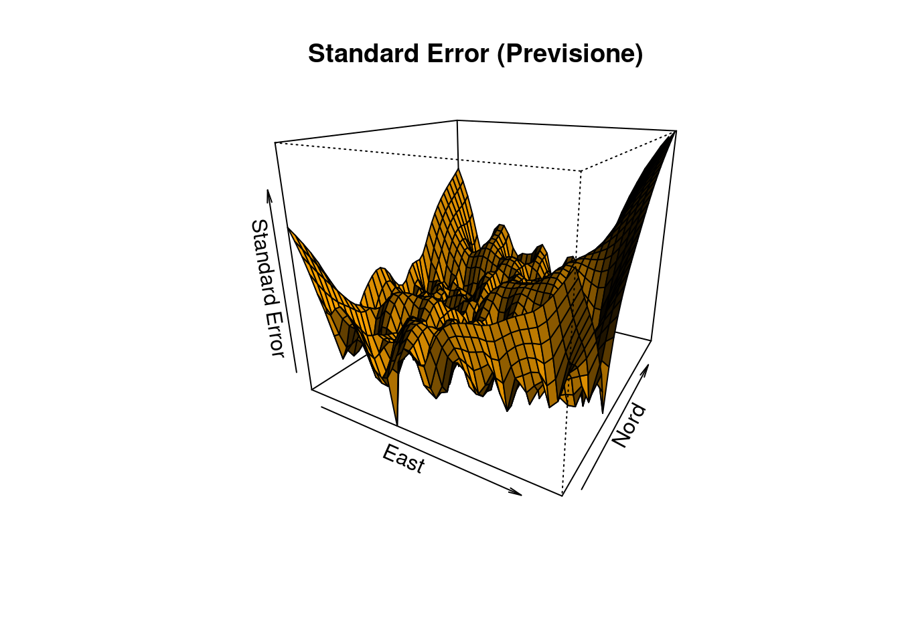
Kriging Universale
Il Kriging Ordinario è un caso specifico di quello Universale, che ipotizza un trend non costante, solitamente lineare o quadratico: \[Z(s) = \mu(s) + \delta(s)\] dove il trend di larga scala \(\mu(s)\) nel nostro caso è ipotizzato essere: \[\mu(s) = \mu(s_1, s_2) = \beta_0+\beta_1s_1+\beta_2s_2\] questo sembrerebbe andare contro l’ipotesi di stazionarietà in media necessaria per applicare il Kriging, in realtà sottraendo ad i nostri dati il trend di fondo possiamo renderli stazionari in media e poter applicare quindi le procedure di stima delle covarianze del processo.
I coefficienti sono tutti significativi e in particolare quelli delle coordinate sono negativi come era da aspettarsi dopo l’analisi esplorativa grafica.
Call:
lm(formula = y ~ coords.north + coords.east, data = d)
Residuals:
Min 1Q Median 3Q Max
-74.926 -18.078 0.293 23.435 72.749
Coefficients:
Estimate Std. Error t value Pr(>|t|)
(Intercept) 441.63635 9.70838 45.49 <2e-16 ***
coords.north -0.36618 0.02566 -14.27 <2e-16 ***
coords.east -0.19599 0.01620 -12.10 <2e-16 ***
---
Signif. codes: 0 '***' 0.001 '**' 0.01 '*' 0.05 '.' 0.1 ' ' 1
Residual standard error: 31.73 on 140 degrees of freedom
Multiple R-squared: 0.6985, Adjusted R-squared: 0.6941
F-statistic: 162.1 on 2 and 140 DF, p-value: < 2.2e-16Per capire come si distribuiscono i residui possiamo riutilizzare la seguente serie di plot:
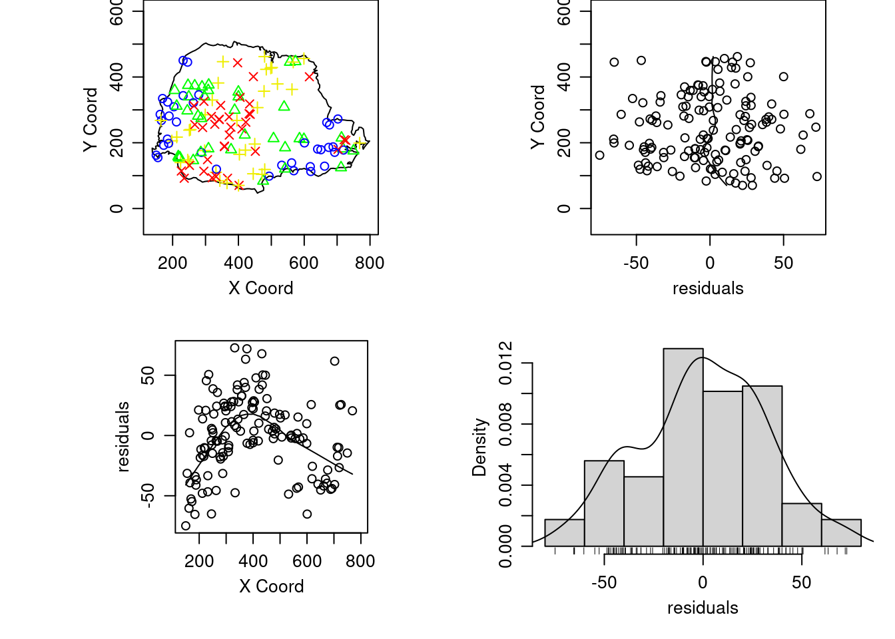
L’informazione più rilevante qui ce la fornisce il Data Posting che ci fa vedere che i residui sembrano clusterizzarsi, suggerendo ancora un segnale ancora spazialmente correlato. Procediamo quindi a rappresentare al variogramma empirico dei residui insieme alla nuvola di punti, che confermano quanto appena detto.
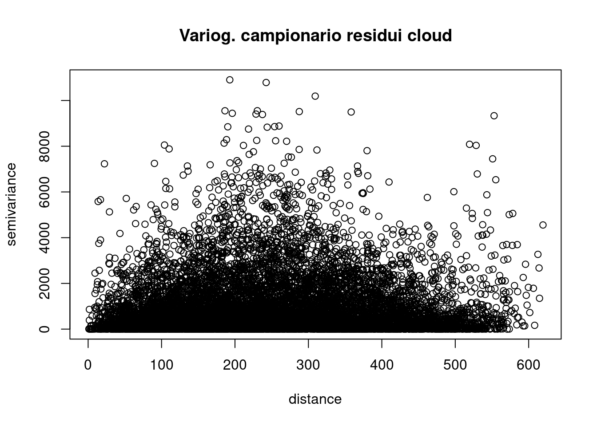
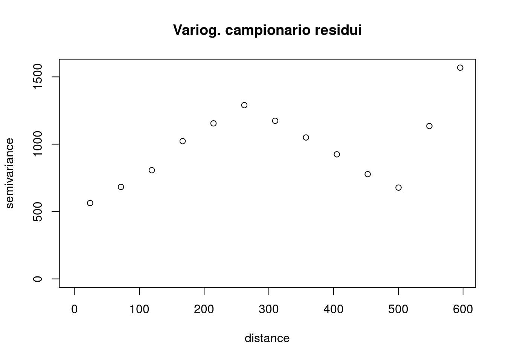
Si prosegue come nel caso precedente di Kriging Ordinario alla stima dei parametri del modello sferico di covarianza prima tramite WLS e poi ML:
$pmethod
[1] "WLS (weighted least squares)"
$cov.model
[1] "spherical"
$spatial.component
sigmasq phi
708.3601 239.2152
$spatial.component.extra
kappa
0.5
$nugget.component
tausq
383.4049
$fix.nugget
[1] FALSE
$fix.kappa
[1] TRUE
$practicalRange
[1] 239.2152
$sum.of.squares
value
199816760
$estimated.pars
tausq sigmasq phi
383.4049 708.3601 239.2152
$weights
[1] "npairs"
$call
variofit(vario = vario_res, cov.model = "sph")
attr(,"class")
[1] "summary.variomodel"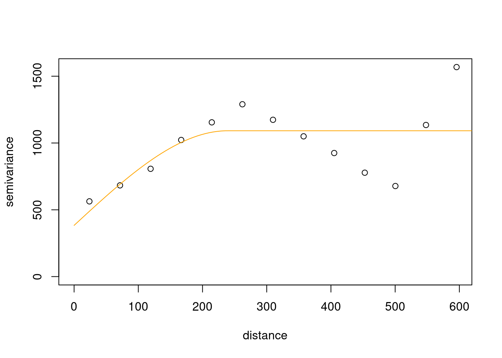
Mentre i risultati delle stime dei parametri dello sferico con Massima Verosimiglianza:
Summary of the parameter estimation
-----------------------------------
Estimation method: maximum likelihood
Parameters of the mean component (trend):
beta0 beta1 beta2
-24.4101 0.0682 -0.0458
Parameters of the spatial component:
correlation function: spherical
(estimated) variance parameter sigmasq (partial sill) = 717.3
(estimated) cor. fct. parameter phi (range parameter) = 378.1
anisotropy parameters:
(fixed) anisotropy angle = 0 ( 0 degrees )
(fixed) anisotropy ratio = 1
Parameter of the error component:
(estimated) nugget = 410.9
Transformation parameter:
(fixed) Box-Cox parameter = 1 (no transformation)
Practical Range with cor=0.05 for asymptotic range: 378.0716
Maximised Likelihood:
log.L n.params AIC BIC
"-662" "6" "1336" "1354"
non spatial model:
log.L n.params AIC BIC
"-695.8" "4" "1400" "1411"
Call:
likfit(geodata = WWres, trend = "1st", ini.cov.pars = c(4, 5),
fix.nugget = FALSE, nugget = variofit_ok$nugget, cov.model = "sph")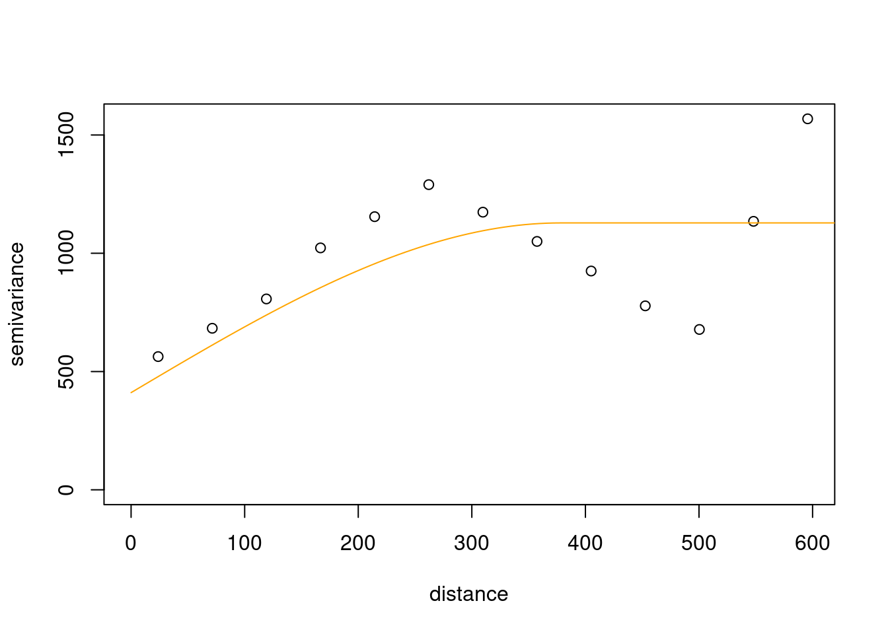
I risultati delle due stime sono più coerenti rispetto al precedente modello ma anche qui lo stimatore con minimi quadrati ponderati sembra fare meglio, scegliamo quindi di adottare i valori relativi a questo stimatore per effettuare le previsioni.
Per visualizzare al meglio i risultati della previsione mostriamo Previsione e Standard Error di questa tramite dei Perspective Plots.
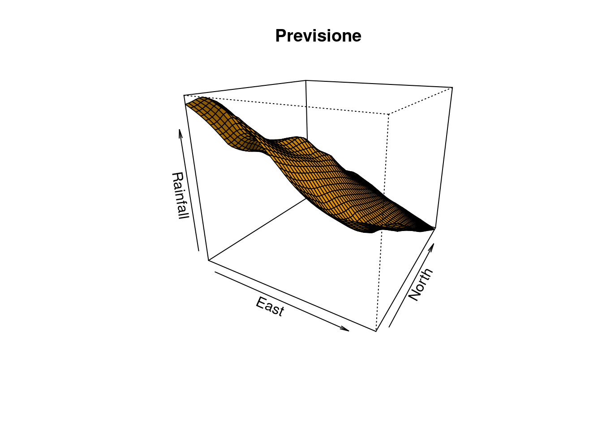
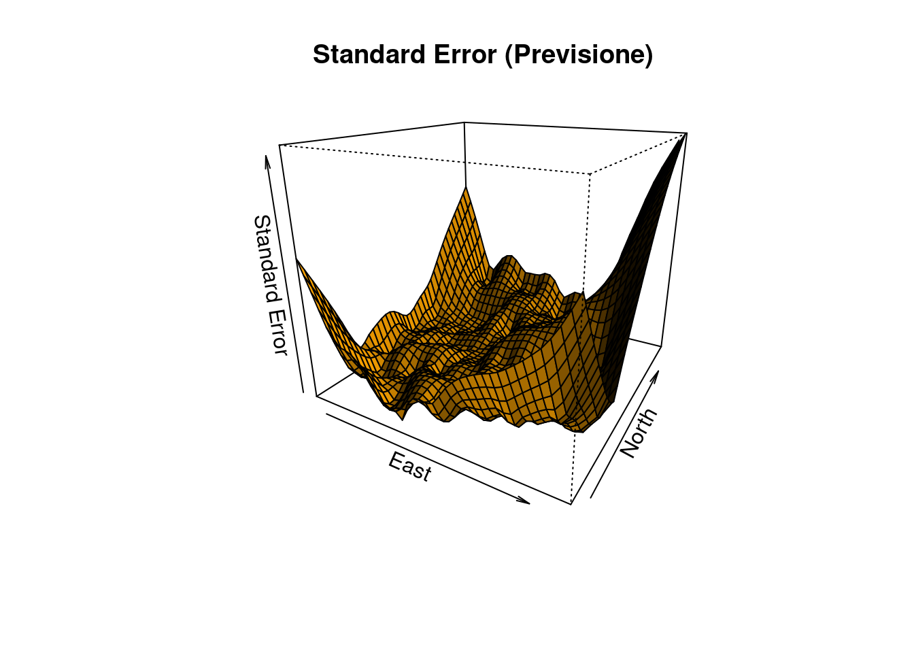
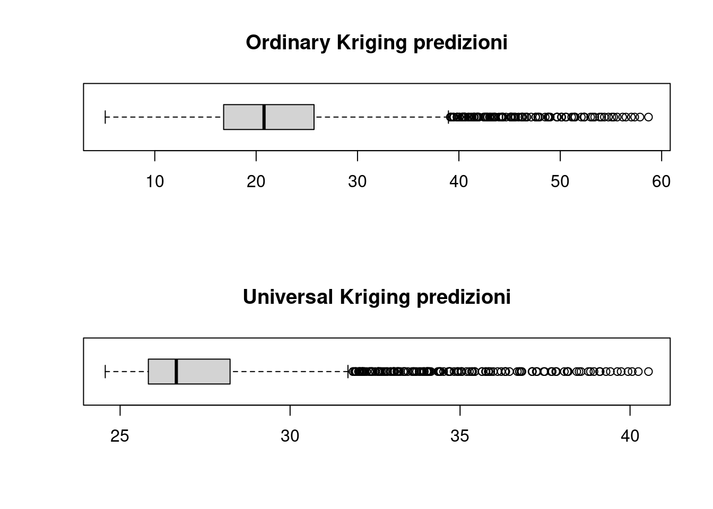
La scelta del miglior stimatore tra i due dipende proprio dallo Standard Error, nel nostro caso gli indici di sintesi ci suggeriscono che lo stimatore a cui è associato minor rischio è il secondo. La scelta del modello perciò deve ricadere sullo stimatore che utilizza il Kriging Universale.
Conclusione
Con questo lavoro si è voluto utilizzare un approccio di tipo spaziale ai dati sotto esame, l’intuizione che si è rivelata fondata è stata quella di ipotizzare, data la natura della variabile in osservazione (livello di precipitazioni temporalesche nella regione di Paranà (Brasile)) una non sussistenza delle classiche ipotesi i.i.d. adottate in molti modelli statistici. Più precisamente si è voluto stimare quelle relazioni tra le coppie di variabili casuali (Covarianze) tramite modelli teorici chiamati strutture di covarianze per poi poter utilizzare uno stimatore con delle ottime proprietà predittive chiamato Kriging. Tra le due tipologie provate il migliore dei due risulta essere il Kriging Universale in quanto presenta Standard Error minori.
Un utile prosieguo del lavoro potrebbe essere andare a considerare un trend anisotropico invece che isotropico, sfruttando l’informazione che ci danno le analisi grafiche. Questo ci permetterebbe di sfruttare al meglio l’evidenza di un fenomeno che si configura più marcato andando nella direzione Sud-Ovest della regione.